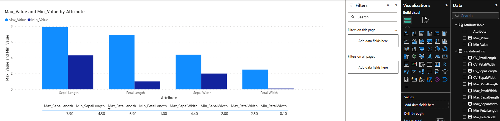
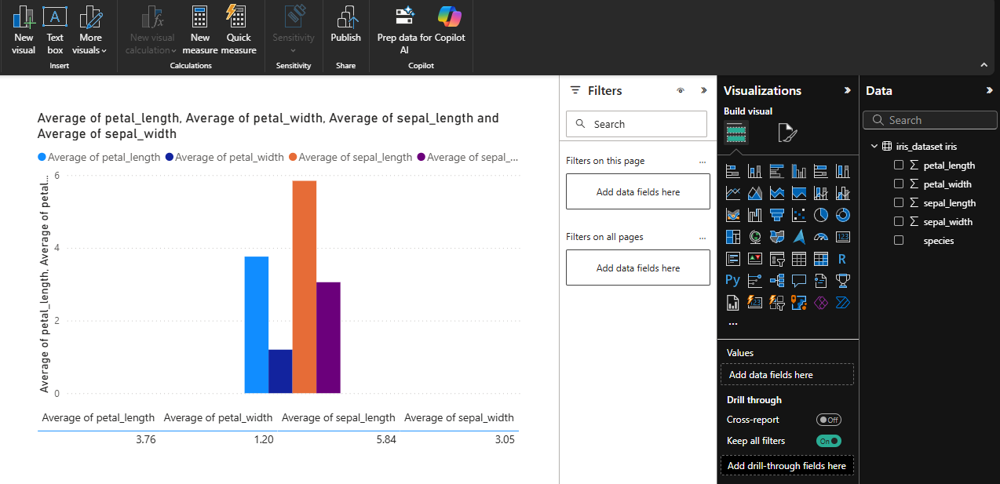

Eksplorasi Data#
1. Statistik Deskriptif Dasar#
1.1 Min-Max Setiap Kolom#

Hasil Analisis:
sepal_length: 4.3 - 7.9 cm (range: 3.6 cm)
sepal_width: 2.0 - 4.4 cm (range: 2.4 cm)
petal_length: 1.0 - 6.9 cm (range: 5.9 cm)
petal_width: 0.1 - 2.5 cm (range: 2.4 cm)
Insight: Petal length memiliki variasi terbesar (5.9 cm), menunjukkan karakteristik yang paling beragam antar spesies.
1.2 Rata-rata Setiap Kolom#

Hasil Analisis:
sepal_length: ~5.84 cm
sepal_width: ~3.05 cm
petal_length: ~3.76 cm
petal_width: ~1.20 cm
Insight: Sepal umumnya lebih besar dari petal, dengan width selalu lebih kecil dari length.
1.3 Jumlah Setiap Kelas#

Hasil:
Iris-setosa: 50 sampel (33.33%)
Iris-versicolor: 50 sampel (33.33%)
Iris-virginica: 50 sampel (33.33%)
Insight: Dataset perfectly balanced - tidak ada bias kelas, ideal untuk machine learning.
2. Analisis Distribusi Data#
2.1 Analisis Histogram#
Tujuan: Memahami bentuk distribusi setiap variabel.
Yang perlu dicari:
Apakah distribusi normal atau skewed?
Adakah multimodal distribution (puncak ganda)?
Outlier atau nilai ekstrem?
Ekspektasi:
Petal measurements: kemungkinan bimodal/multimodal (karena perbedaan spesies jelas)
Sepal measurements: lebih normal, overlap antar spesies
2.2 Analisis Box Plot per Spesies#
Tujuan: Membandingkan distribusi antar spesies untuk setiap variabel.
Yang perlu diperhatikan:
Median setiap spesies
Rentang IQR (Interquartile Range)
Outlier dalam setiap spesies
Overlap antar spesies
Ekspektasi:
Iris-setosa: petal kecil, mudah dibedakan
Iris-versicolor & virginica: kemungkinan overlap
3. Analisis Hubungan Antar Variabel#
3.1 Scatter Plot Analysis#
Tujuan: Melihat korelasi dan pola hubungan antar variabel.
Kombinasi penting:
Petal length vs Petal width: Korelasi positif kuat
Sepal length vs Sepal width: Korelasi lemah/negatif
Petal vs Sepal measurements: Pola berbeda per spesies
Yang dicari:
Linear/non-linear relationship
Clustering pattern per spesies
Separability antar kelas
3.2 Correlation Matrix#
Penjelasan: Mengukur kekuatan hubungan linear antar variabel (-1 to +1).
Ekspektasi korelasi:
Petal length & width: korelasi tinggi (+0.8 ke atas)
Sepal measurements: korelasi rendah-sedang
Cross-correlation (petal-sepal): bervariasi
4. Analisis Perbandingan Antar Spesies#
4.1 Statistik per Spesies#
Yang perlu dihitung untuk setiap spesies:
Iris-setosa:
Karakteristik: Petal kecil, sepal lebar
Range nilai: Petal length 1.0-1.9 cm, width 0.1-0.6 cm
Iris-versicolor:
Karakteristik: Ukuran sedang
Range nilai: Petal length 3.0-5.1 cm, width 1.0-1.8 cm
Iris-virginica:
Karakteristik: Petal besar
Range nilai: Petal length 4.5-6.9 cm, width 1.4-2.5 cm
4.2 Coefficient of Variation (CV)#
Rumus: CV = Standard Deviation / Mean
Tujuan: Mengukur variabilitas relatif setiap variabel.
Interpretasi:
CV tinggi: variabel sangat beragam
CV rendah: variabel konsisten
Berguna untuk menentukan feature importance
5. Deteksi Outlier dan Anomali#
5.1 Metode IQR#
Rumus:
Lower bound: Q1 - 1.5 × IQR
Upper bound: Q3 + 1.5 × IQR
Yang dicari:
Data points di luar bounds
Apakah outlier natural atau error?
Pengaruh outlier terhadap klasifikasi
5.2 Z-Score Analysis#
Rumus: Z = (x - mean) / standard deviation
Threshold: |Z| > 2.5 atau 3 sebagai outlier
6. Analisis Separability Kelas#
6.1 Overlap Analysis#
Tujuan: Mengukur seberapa mudah memisahkan antar kelas.
Metrik:
Range overlap antar spesies per variabel
Percentage of misclassifiable instances
Distance between class centroids
6.2 Feature Importance#
Ranking variabel berdasarkan kemampuan diskriminasi:
Petal length: Separasi terbaik
Petal width: Separasi baik
Sepal length: Separasi sedang
Sepal width: Separasi terlemah
7. Insights dan Temuan Utama#
7.1 Karakteristik Data#
Dataset bersih, seimbang, tanpa missing values
4 variabel numerik dengan skala berbeda (perlu normalisasi)
Distribusi bervariasi: normal hingga multimodal
7.2 Pola Spesies#
Iris-setosa: Mudah diidentifikasi (petal sangat kecil)
Iris-versicolor vs virginica: Challenging separation (overlap signifikan)
Petal measurements > Sepal measurements untuk diskriminasi
7.3 Rekomendasi untuk Modeling#
Feature scaling/normalization diperlukan
Petal features sebagai primary predictors
Possible dimensionality reduction (PCA)
Classification algorithms: KNN, SVM, Decision Tree cocok
7.4 Data Quality Assessment#
Completeness: 100% (no missing values)
Consistency: High (standard format)
Accuracy: Reliable (classic benchmark dataset)
Relevance: High (all features contribute)
8. Langkah Selanjutnya#
8.1 Preprocessing#
Check for duplicate records
Feature scaling (StandardScaler/MinMaxScaler)
Outlier treatment decision
Feature engineering possibilities
8.2 Advanced Analysis#
Principal Component Analysis (PCA)
Linear Discriminant Analysis (LDA)
Cluster analysis validation
Statistical significance testing
Catatan: Gunakan penjelasan ini sebagai panduan saat membuat visualisasi. Setiap grafik yang dibuat harus mendukung insights yang disebutkan di atas.